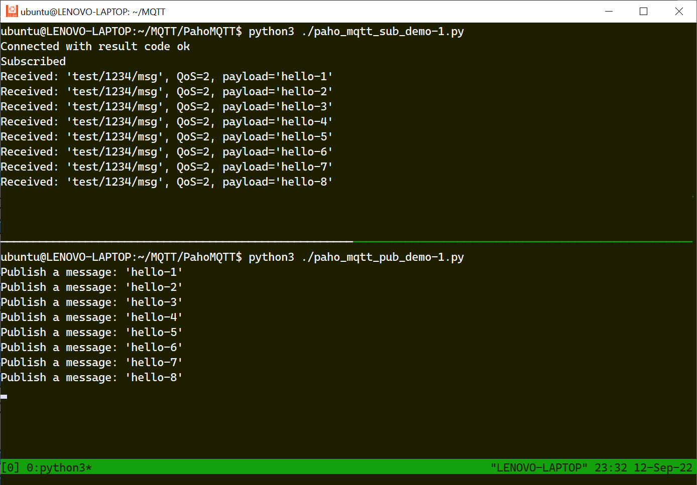

MQTT และการใช้งานสำหรับ Linux (ตอนที่ 3)#
เนื้อหาในตอนที่ 3 นำเสนอตัวอย่างการเขียนโค้ด Python ให้ทำหน้าที่เป็น MQTT Client โดยใช้ไลบรารี Paho MQTT และเชื่อมต่อกับ MQTT Broker ได้ และมีตัวอย่างการเขียนโค้ด MicroPython สำหรับบอร์ดไมโครคอนโทรลเลอร์ ESP32 ที่สามารถเชื่อมต่อกับ MQTT Broker ได้เช่นกัน โดยนำไปทดลองกับ WokWi Simulator และอุปกรณ์ฮาร์ดแวร์จริง
▷ การเขียนโค้ด Python ด้วยไลบรารี Paho MQTT#
Eclipse Paho MQTT เป็นไลบรารีสำหรับการเขียนโค้ดเพื่อเชื่อมต่อกับโบรกเกอร์ ด้วยโพรโทคอล MQTT ในบทความนี้จะนำเสนอตัวอย่างการเขียนโค้ดด้วย Python Paho MQTT Library เพื่อเชื่อมต่อและเผยแพร่ข้อความไปยังโบรกเกอร์ test.mosquito.org หรือสมัครรับข้อความ
แนะนำให้ศึกษาเพิ่มเติมจากเอกสารออนไลน์: Python Paho MQTT API

รูป: แสดงไลบรารีของ Eclipse Paho MQTT ซึ่งมีหลายภาษาคอมพิวเตอร์ให้เลือกใช้งานได้
ก่อนจะทดลองโค้ดตัวอย่าง ให้ติดตั้งแพ็กเกจ paho-mqtt โดยใช้คำสั่ง pip3 ดังนี้
(ทดลองใช้กับ Python 3.10.4 สำหรับระบบปฏิบัติการ Linux / Ubuntu 22.04 LTS)
$ python3 -V
Python 3.10.4
# install the paho-mqtt package using pip3
$ pip3 install --user paho-mqtt
โค้ดตัวอย่าง: paho_mqtt_pub_demo-1.py
โค้ดสาธิตการใช้คำสั่ง paho.mqtt.publish()
เพื่อเชื่อมต่อและส่งข้อความไปยังโบรกเกอร์ (MQTT Publisher Only)
แล้วจบการทำงานหลังจากส่งข้อความได้แต่ละครั้ง และมีการตั้งค่าดังนี้
- เชื่อมต่อไปยังโบรกเกอร์ Test MQTT Broker พอร์ต
1883เพื่อส่งข้อความทั้งหมด 10 ครั้ง และใช้ชื่อหัวข้อtest/1234/msg - ตั้งค่า Client ID โดยใช้ฟังก์ชัน
uuid.uuid4()เพื่อสร้างข้อความ UUID ที่มีขนาด 36 อักขระ - เลือกใช้ QoS=2 และโพรโทคอล MQTT v3.1.1
#!/usr/bin/env python3
import paho.mqtt.client as mqtt
import paho.mqtt.publish as publish
import sys, time, uuid
# specify the MQTT broker and the listening port (1883)
mqtt_hostname = "test.mosquitto.org"
mqtt_port = 1883
# MQTT client ID (36-char random UUID)
id = str( uuid.uuid4() )
# No user and password specified
user_pass = None
try:
cnt = 1 # message counter
while cnt <= 10: # repeat 10 times
# connect to the MQTT broker, publish a message and
# disconnect cleanly after a message has been published..
topic = "test/1234/msg"
msg = "hello-" + str(cnt)
print( f"Publish a message: '{msg}'" )
publish.single(
topic=topic, payload=msg,
hostname=mqtt_hostname, port=mqtt_port,
client_id=id, qos=2, keepalive=0,
protocol=mqtt.MQTTv311, transport="tcp",
retain=False, will=None,
auth=user_pass, tls=None )
# wait for 5 seconds before proceeding to the next iteration
time.sleep( 5.0 )
cnt += 1
except KeyboardInterrupt:
print( "Terminated" )
sys.exit(0)
except Exception as ex:
print( "error>", ex )
sys.exit(-1)
finally:
print( "Done...." )
ถ้าจะเปลี่ยนมาลองใช้พอร์ต 1884 เพื่อเชื่อมต่อกับ Test MQTT Broker ให้แก้ไขโค้ด
เช่น เปลี่ยนหมายเลขของพอร์ต
mqtt_port = 1884
และกำหนดค่าของตัวแปร user_pass ดังนี้
user_pass = { 'username': 'rw', 'password': 'readwrite' }
โค้ดตัวอย่าง: paho_mqtt_pub_demo-2.py
โค้ดสาธิตการใช้ฟังก์ชันที่เกี่ยวข้องกับ paho.mqtt.client
เพื่อเชื่อมต่อและส่งข้อความไปยังโบรกเกอร์หลายครั้ง (MQTT Publisher Only)
และมีการใช้คำสั่ง loop_start()
เพื่อสร้างเธรดที่คอยทำงานอยู่เบื้องหลัง (Background Thread)
ให้จัดคอยจัดการเหตุการณ์ต่าง ๆ ที่เกิดขึ้นจากการทำงานของ MQTT
#!/usr/bin/env python3
import sys, time, uuid
import paho.mqtt.client as mqtt
### define callback functions
def on_connect(client, userdata, flags, rc):
print( f"CONNACK received with code {rc}" )
def on_publish(client, userdata, mid):
print( f"Published: message id={mid}" )
# MQTT client ID (36-char random UUID)
id = str( uuid.uuid4() )
# create MQTT client
client = mqtt.Client( client_id=id,
clean_session=True, protocol=mqtt.MQTTv311 )
# set callback functions before connecting to the MQTT broker
client.on_connect = on_connect
client.on_publish = on_publish
# connect to MQTT broker, localhost on port 1883
client.connect( "test.mosquitto.org", 1883, 60 )
# start the event-processing loop (use a background thread)
client.loop_start()
cnt = 1 # message counter
try:
topic = "test/1234/msg"
while cnt <= 10: # repeat 10 times
msg = "hello-" + str(cnt)
(result,mid)=client.publish( topic, msg, qos=2 )
time.sleep(5.0) # sleep for 5 seconds
cnt += 1
except KeyboardInterrupt:
print( "Terminated..." )
except Exception as ex:
print( "error>", ex )
finally:
client.loop_stop() # stop the MQTT background thread
client.disconnect() # disconnect
โค้ดตัวอย่าง: paho_mqtt_pub_demo-3.py
โค้ดสาธิตการเชื่อมต่อและส่งข้อความไปยังโบรกเกอร์หนึ่งครั้ง และเลือกใช้หมายเลขพอร์ต 8883
ซึ่งจะมีการเข้ารหัสข้อมูล และจะต้องใช้ไฟล์ CA-signed Certificate ของ
Test Mosquitto Broker ร่วมด้วย
#!/usr/bin/env python3
import paho.mqtt.publish as publish
import paho.mqtt.client as mqtt
import sys, time, ssl, uuid
mqtt_hostname = 'test.mosquitto.org'
mqtt_port = 8883
mqtt_tls = {
'ca_certs': "./mosquitto.org.crt", # CA / server certificate
'tls_version': ssl.PROTOCOL_TLSv1_2 # use the TLS v1.2
}
# MQTT client ID (36-char random UUID)
id = str( uuid.uuid4() )
try:
publish.single(
topic="test/1234/msg",
payload="hello",
hostname=mqtt_hostname,
client_id=id,
auth=None,
tls=mqtt_tls,
port=mqtt_port,
protocol=mqtt.MQTTv311 )
except Exception as ex:
print( "error>", ex)
sys.exit(-1)
โค้ดตัวอย่าง: paho_mqtt_sub_demo-1.py
โค้ดสาธิตการใช้ฟังก์ชันที่เกี่ยวข้องกับ paho.mqtt.client
เพื่อเชื่อมต่อและสมัครรับข้อความจากโบรกเกอร์ (MQTT Subscriber Only)
โดยใช้ชื่อหัวข้อ test/1234/# และ QoS=2
การทำงานของโปรแกรมเป็นแบบ Event-driven Processing และมีการเรียกใช้ Callbacks คือ จะมีการเรียกฟังก์ชันที่ถูกกำหนดให้เป็น Callback Functions สำหรับเหตุการณ์ต่าง ๆ ที่เกี่ยวข้องกับการทำงานของ MQTT Client เช่น
on_connect()เป็นฟังก์ชันที่จะถูกเรียกหลังจากที่ได้เชื่อมต่อกับโบรกเกอร์แล้วon_subscribe()เป็นฟังก์ชันที่จะถูกเรียกหลังจากที่ได้สมัครรับข้อความกับโบรกเกอร์แล้วon_message()เป็นฟังก์ชันที่จะถูกเรียกหลังจากที่ได้รับข้อความจากโบรกเกอร์ในแต่ละครั้ง
#!/usr/bin/env python3
import paho.mqtt.client as mqtt
import sys, time, uuid
# define callback functions for MQTT actions
def on_connect(client, userdata, flags, rc):
print( "Connected with result code " + ['failed','ok'][(rc==0)] )
client.subscribe( 'test/1234/#', qos=2 )
def on_subscribe(client, userdata, mid, qos):
print( f"Subscribed" )
def on_message(client, userdata, msg):
print( f"Received: '{msg.topic}', QoS={msg.qos},",
f"payload='{msg.payload.decode('utf-8')}'" )
# set the MQTT client ID (36-char random UUID)
id = str( uuid.uuid4() )
# create a MQTT client
client = mqtt.Client( client_id=id,
clean_session=True, protocol=mqtt.MQTTv311 )
# set the callback functions
client.on_connect = on_connect
client.on_message = on_message
client.on_subscribe = on_subscribe
# connect to MQTT broker on port 1883 to create a clean session
try:
client.connect( "test.mosquitto.org", 1883, keepalive=60 )
except Exception as ex:
print( "error>", ex )
sys.exit(-1)
try:
# enter the event-processig forever loop (blocking)
client.loop_forever()
except KeyboardInterrupt:
print( "Terminated..." )
except Exception as ex:
print( "error>", ex )
finally:
client.disconnect() # disconnect

รูป: ตัวอย่างการรันโค้ด paho_mqtt_sub_demo-1.py และ paho_mqtt_pub_demo-1.py
โค้ดตัวอย่าง: paho_mqtt_pubsub_demo.py
สาธิตการสมัครรับข้อความและส่งข้อความไปยังโบรกเกอร์ (MQTT Publisher & Subscriber)
โดยใช้ชื่อหัวข้อเดียวกัน และเลือกใช้พอร์ต 8884 ซึ่งจะต้องมีไฟล์ต่อไปนี้
(ได้จากขั้นตอนการสร้างไฟล์ Certificate ในบทความ "ตอนที่ 2" )
- CA-signed / Server Certificate (.crt) ของ MQTT Broker:
mosquitto.org.crt - Client Certificate:
client.crt - Client Key:
client.key
#!/usr/bin/env python3
import paho.mqtt.client as mqtt
import sys, time, uuid, ssl
mqtt_hostname = "test.mosquitto.org"
mqtt_port = 8884
cnt = 1
run = True
topic = 'test/1234/msg' # topic for message publication
def on_message_test(client, obj, msg):
global cnt, run, topic
print( f"topic='{msg.topic}', qos={msg.qos}, payload={msg.payload}" )
cnt += 1
if cnt <= 10:
client.publish( topic=topic, payload='hello-'+str(cnt),
qos=1, retain=False )
else:
run = False
def on_message(client, obj, msg):
print( f"topic='{msg.topic}', qos={msg.qos}, payload={msg.payload}" )
def on_publish(client, userdata, mid):
print( f"message published: message id={mid}" )
def on_subscribe(client, obj, mid, qos):
print( "client subscribed" )
def on_connect(client, userdata, flags, rc):
global cnt
print( "client connected" )
client.subscribe( "test/1234/#", qos=1 )
client.publish( topic=topic,
payload='hello-'+str(cnt) , qos=1, retain=False )
# MQTT client ID (36-char random UUID)
id = str( uuid.uuid4() )
# create a MQTT client
client = mqtt.Client( client_id=id )
# set callback functions
client.on_message = on_message
client.on_publish = on_publish
client.on_subscribe = on_subscribe
client.on_connect = on_connect
# add a callback function for incoming messages on a specific topic
client.message_callback_add( topic, on_message_test )
# set the TLS certificate files
client.tls_set( ca_certs='./mosquitto.org.crt',
certfile='./client.crt', keyfile='./client.key',
cert_reqs=ssl.CERT_REQUIRED,
tls_version=ssl.PROTOCOL_TLSv1_2 )
# connect to the MQTT broker
client.connect( mqtt_hostname, mqtt_port, 60 )
try:
while run:
client.loop() # a polling loop (non-blocking call)
time.sleep( 1.0 )
except KeyboardInterrupt:
print( 'Terminated....' )
except Exception as ex:
print( "error>", ex )
▷ การเขียนโค้ด MicroPython สำหรับ ESP32 เพื่อใช้งาน MQTT#
ขั้นตอนการติดตั้งและใช้งาน MicroPython (อ้างอิงจาก "Getting started with MicroPython on the ESP32")
- ดาวน์โหลดและติดตั้งซอฟต์แวร์ Python3 เช่น สำหรับระบบปฏิบัติการ Windows
- ดาวน์โหลดและติดตั้งซอฟต์แวร์ Thonny IDE เช่น สำหรับระบบปฏิบัติการ Windows
- ติดตั้งแพ็กเกจ esptool.py สำหรับ Python3
- ดาวน์โหลดและติดตั้งไฟล์เฟิร์มแวร์ (.bin) MicroPython for ESP32
ทำคำสั่งต่อไปนี้ เพื่อติดตั้งไฟล์เฟิร์มแวร์ (ทดลองใช้ไฟล์ esp32-20220618-v1.19.1.bin)
ไปยังบอร์ดไมโครคอนโทรลเลอร์ ESP32 (ทดลองกับบอร์ด Wemos Lolin32 Lite, 4MB Flash)
# erase the on-chip Flash
esptool.py --chip esp32 erase_flash
# write the firwmare file
esptool.py --chip esp32 --baud 460800 write_flash -z 0x1000 esp32-20220618-v1.19.1.bin
รูป: แสดงขั้นตอนการทำคำสั่งเพื่อเขียนไฟล์เฟิร์มแวร์ MicroPython ไปยังบอร์ด ESP32
การเขียนโค้ด MicroPython เพื่อสื่อสารด้วยโพรโทคอล MQTT
จะใช้คำสั่งของโมดูลชื่อ umqtt (Simple MQTT Client for MicroPython)
แนะนำให้ศึกษาการใช้งานจาก API
ถัดไปเป็นการทดลองใช้ Thonny IDE สำหรับ Windows 10
- เปิดใช้งาน Thonny IDE ไปที่เมนู Run > Select Interpreter เลือก MicroPython (ESP32) และหมายเลขพอร์ตอนุกรมของบอร์ด ESP32 ที่เชื่อมต่อกับคอมพิวเตอร์ผู้ใช้ แล้วกดปุ่ม OK
- ให้เปิดไฟล์
boot.pyที่มีอยู่ระบบไฟล์ในหน่วยความแฟลชของบอร์ด ESP32 ตั้งแต่เริ่มต้น ใน Editor ของ Thonny IDE รายการในระบบไฟล์ของ MicroPython จะมองเห็นได้ใน Tab ด้านซ้ายมือชื่อ "Files" ไฟล์นี้จะถูกเรียกให้ทำงานทุกครั้งเมื่อมีการรีเซตการทำงานของบอร์ด (หรือกดปุมCtrl+dในหน้าต่าง Shell ของ Thonny IDE) จากนั้นแก้ไขตามโค้ดตัวอย่าง ซึ่งจะทำหน้าที่เชื่อมต่อกับ Wi-Fi ตามค่า SSID และรหัสผ่านที่กำหนดไว้ ถ้าเชื่อมต่อได้ จะแสดงข้อความที่เป็นหมายเลขไอพี (IP Address) ที่ได้รับมาจาก DHCP Server ในระบบเครือข่ายไร้สาย - ให้สร้างไฟล์ใหม่แล้วอัปโหลดไปยังบอร์ด ESP32 ด้วย Thonny IDE ได้แก่
- ไฟล์
config.jsonซึ่งมีข้อมูลแบบ JSON ใช้สำหรับตั้งค่า SSID และรหัสผ่านสำหรับการเชื่อมต่อ Wi-Fi และจำเป็นต้องใช้เมื่อboot.pyเริ่มทำงาน - ไฟล์
main.pyซึ่งจะถูกเรียกให้ทำงานต่อจากboot.pyโดยอัตโนมัติ และแก้ไขตามโค้ดตัวอย่าง ซึ่งจะทำการเชื่อมต่อไปยังโบรกเกอร์ test.mosquitto.org (ทดลองใช้พอร์ต1883หรือ1884) มีการสมัครรับข้อความตามหัวข้อที่กำหนด และส่งข้อความไปยังโบรกเกอร์ซ้ำไปเรื่อย ๆ เลือกใช้ QoS=1 เว้นระยะเวลาประมาณ 1 วินาที ต่อหนึ่งครั้งการส่งข้อความ (หากต้องการจบการทำงาน ให้กดปุ่ม Stop)
- ไฟล์
รูป: การเปิดใช้งาน Thonny IDE และเชื่อมต่อกับบอร์ด ESP32 ที่ได้มีการติดตั้งไฟล์เฟิร์มแวร์ MicroPython ไว้พร้อมใช้งานแล้ว
ไฟล์: config.json
{
"ssid": "XXXXXXXXXXX",
"pwd": "XXXXXXXXXXX"
}
โค้ดตัวอย่างสำหรับไฟล์ boot.py
import utime
import network
import ujson
import ntptime
import gc
#---------------------------------------------------------
JSON_CONFIG_FILE = 'config.json'
config = {}
try:
with open( JSON_CONFIG_FILE ) as json_file:
config = ujson.load(json_file)
except OSError as ex:
print( 'Cannot open JSON file' )
sys.exit(-1)
# connect the WiFi network
def wifi_connect( max_retry_count=10 ):
global config
sta_if = network.WLAN( network.STA_IF )
sta_if.active( False )
utime.sleep_ms( 1 )
sta_if.active( True )
sta_if.connect( config['ssid'], config['pwd'] )
retry_count = 1
while not sta_if.isconnected():
retry_count += 1
if retry_count >= max_retry_count:
return False
utime.sleep(0.5)
#show IP address assigned by DHCP server
print( 'Connected:', sta_if.ifconfig()[0] )
return True
# connect the NTP (Network Time Protocol) server
def ntp_connect( max_retry_count=10 ):
ntptime.host = "th.pool.ntp.org"
ntp_retry_count = 0
while True:
try:
ntptime.settime()
utime.sleep(0.1)
break
except OSError:
ntp_retry_count += 1
if ntp_retry_count >= max_retry_count:
break
print( 'Connecting WiFi....' )
if not wifi_connect():
print( 'Cannot connect WiFi' )
else:
print( 'Connecting NTP....' )
ntp_connect()
print( 'Current time: ' + str(utime.localtime()) )
# call the garbage collector
gc.collect()
โค้ดตัวอย่างสำหรับไฟล์ main.py
import machine
import gc
import network
import ubinascii
import utime
from umqtt.simple import MQTTClient
# set the client ID based on the ESP32's unique ID
id = ubinascii.hexlify( machine.unique_id() )
# set port number (either 1883 or 1884)
port = 1883
if port == 1884:
user='rw'
password='readwrite'
else:
user=None
password=None
# create an MQTTClient instance
client = MQTTClient( client_id=id,
server = b'test.mosquitto.org', port=port, keepalive=60,
user=user, password=password )
# define the callback function for a subscription message
def sub_cb( topic, msg ):
print( "received: topic='%s'," % topic.decode(),
"message='%s'" % msg.decode() )
# set the callback function
client.set_callback( sub_cb )
count = 0 # message counter
try:
client.connect( clean_session=True )
print( "MQTT broker connected" )
client.subscribe( b'test/1234/#' )
topic = b'test/1234/msg'
while True:
count += 1
msg = "hello #" + str(count)
client.publish( topic, msg, qos=1, retain=False )
print( "published:", msg )
gc.collect() # call garbage collector
print( 'free:', gc.mem_free() )
utime.sleep_ms( 500 )
client.check_msg() # non-blocking, check the message
utime.sleep_ms( 500 )
except Exception as ex:
print( "error>", ex )
finally:
client.disconnect()
รูป: สาธิตการรันโค้ดตัวอย่างซึ่งแสดงให้เห็นว่าสามารถส่งข้อความและรับข้อความจากโบรกเกอร์ได้สำเร็จ
ข้อสังเกต:
- ฟังก์ชันในโมดูล
umqttสำหรับ MicroPython อาจมีข้อจำกัดอยู่บ้าง เนื่องจากมีข้อจำกัดเรื่องหน่วยความจำ SRAM ของ ESP32 umqttรองรับการใช้งานโพรโทคอล MQTT v3.1.1 เท่านั้น- การสมัครรับข้อความและส่งข้อความ ยังไม่รองรับ QoS=2 (ใช้ได้เฉพาะ QoS=0 หรือ QoS=1)
- หัวข้อและข้อความ จะถูกส่งเป็นข้อมูลไบต์ (bytes encoded) และไม่ใช่ข้อความแบบ UTF-8 เพื่อลดปริมาณการใช้หน่วยความจำของระบบ
umqtt.robustสามารถใช้แทนumqtt.simpleได้ ซึ่งมีข้อดีคือ สามารถเชื่อมต่อกับโบรกเกอร์ได้อัตโนมัติ เมื่อขาดการเชื่อมต่อชั่วคราว (Auto-Reconnect) และเชื่อมต่อกับโบรกเกอร์เพื่อสร้าง Persistent Session ได้- นอกจากนั้นยังมีโมดูล
umqtt.simple2และumqtt.robust2เป็นตัวเลือกอื่นอีกให้ลองใช้งาน
หากต้องการเชื่อมต่อกับโบรกเกอร์ โดยใช้พอร์ต 8883 จะต้องใช้ไฟล์ mosquitto.org.crt
นำไปใส่ไว้ในระบบไฟล์ของ MicroPython และแก้ไขโค้ดตัวอย่างในส่วนที่เกี่ยวข้องกับการเชื่อมต่อ ดังนี้
# set port number
port = 8883
# open the CA signed certificate for mosquitto.org
with open('mosquitto.org.crt', 'rb') as f:
cert = f.read()
ssl_params = { 'cert': cert }
# create an MQTTClient instance
client = MQTTClient( client_id=id,
server = b'test.mosquitto.org', port=port, keepalive=60,
ssl=True, ssl_params=ssl_params )
หากไม่มีบอร์ด ESP32 ก็สามารถทดลองใช้ Wokwi Simulator ได้ ให้ตั้งค่า SSID เป็น "Wokwi-GUEST" และรหัสผ่าน ""
รูป: การทดลองใช้งาน Wokwi Simulator เพื่อรันโค้ด MicroPython สำหรับบอร์ด ESP32
(บอร์ด: wokwi-esp32-devkit-v1 และเฟิร์มแวร์: micropython-20220618-v1.19.1)
▷ กล่าวสรุป#
บทความนี้ได้สาธิตการเชื่อมต่อไปยังโบรกเกอร์สาธารณะ Mosquitto Broker โดยเลือกใช้ Test Mosquitto Broker และสาธิตวิธีการเขียนโค้ด Python ด้วยคำสั่งต่าง ๆ ของไลบรารี Paho MQTT Client และ MicroPython สำหรับบอร์ดไมโครคอนโทรลเลอร์ ESP32 เพื่อส่งข้อความและสมัครรับข้อความ
อ่านเนื้อหา ตอนที่ 2 | ตอนที่ 4
This work is licensed under a Creative Commons Attribution-ShareAlike 4.0 International License.
Created: 2022-09-12 | Last Updated: 2022-09-17